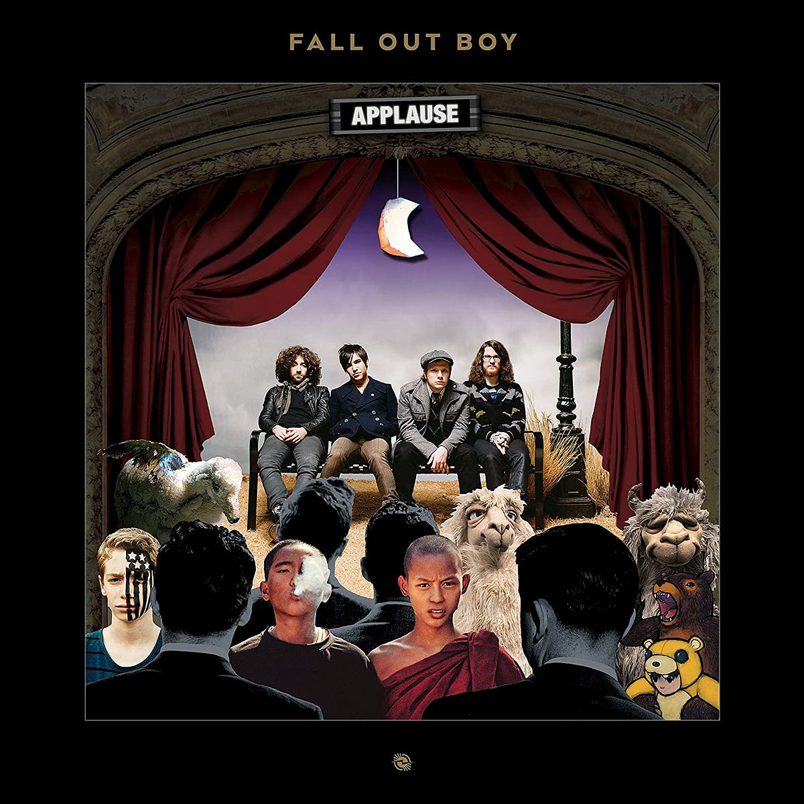
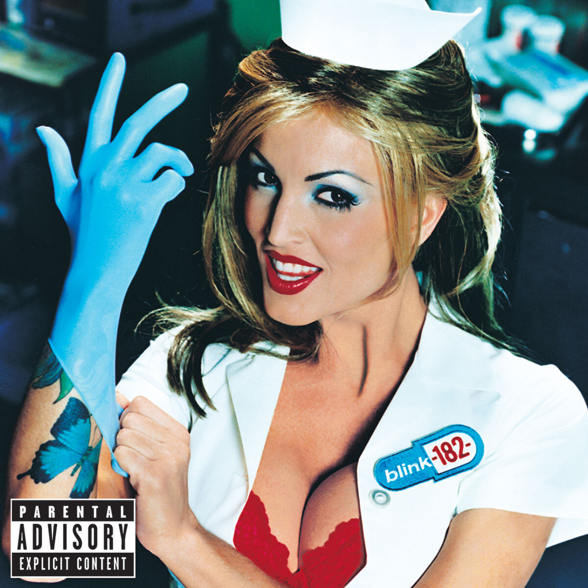

Fallout Boys
Fallout Boys are a popular band that create pop/punk emo music, some of my favorite songs by them would include "Sugar we're going down" and "Dance, Dance"
Pierce the Veil

Pierce the veil is another popular band that blew up in the early 2000's the band was known for creating pop/emo music as well and was really popular in the teen scene at the time. Some of my favorite songs of this band would include "King for a Day", and "Hold on till May".
Blink-182
Blink 182 is a band that creates pop-music, this band is one of my favorites that I listen to daily. Some of my favorite songs would include "Aliens Exist", and "I Miss You"